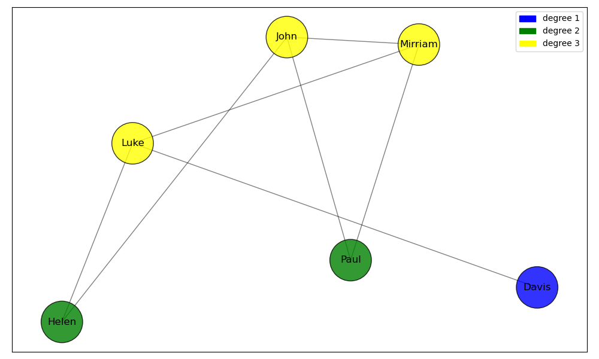
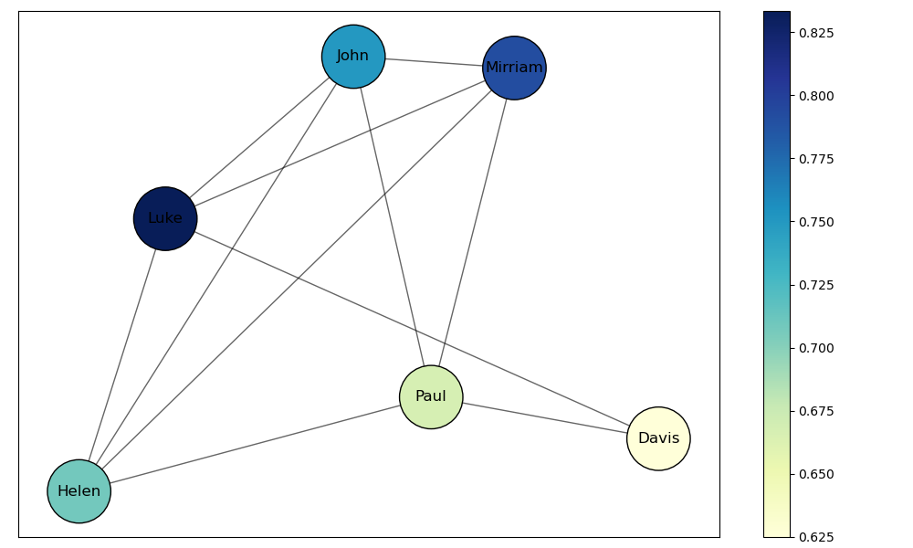

import matplotlib.pyplot as plt #allows us to call the matplotlib.pyplot library as 'plt'
import matplotlib.patches as mpatches #imports mpatches matplotlib subpackage
import networkx as nx #allows us to call the networkx library as 'nx'
import pandas as pd #allows us to call the pandas library as 'pd'
import numpy as np
import geopandas as gpd
import contextily as ctx
from mpl_toolkits.axes_grid1.inset_locator import inset_axes
import community as community_louvain
import randomSOCI 415 Network Analysis
Python
network analysis
This notebook is an introduction to basic network analysis in Python.
This notebook introduces key concepts in network analysis pertaining to sociology and provides a hands-on tutorial to using the NetworkX Python library.
1. What is Network analysis?
Network Analysis is a set of techniques used to study the structure and dynamics of networks. Networks are collections of objects/locations/entities (called nodes) connected by relationships (called edges). Network analysis has applications in many fields, including sociology, biology, economics, computer science, and more.

Network science in Sociology Network analysis in sociology is the systematic study of social structure through the mapping and measurement of relationships among individuals, groups, or organizations. It is not a discipline on its own, but rather a methodological and theoretical approach within sociology that helps conceptualize, describe, and model society as interconnected sets of actors linked by specific relationships. Network analysis in sociology is a core tool for understanding how relationships and social structures impact individuals and groups,
1.1 Key terms

Node: A node is a representation of an individual entity or actor in a network. In different contexts, nodes can be people, organizations, cities, or any other unit of analysis.
Edge: An edge represents the relationship or connection between two nodes. Edges can be directed (having a specific direction from one node to another) or undirected (no direction, implying a mutual relationship).

Degree: The degree of a node is the number of edges connected to it. In directed networks, this can be further divided into in-degree (number of incoming edges) and out-degree (number of outgoing edges).

The network above is an example of a Undirected graph, a graph with no direction. This means that if there is a connection between node A and node B, it is bidirectional - A is connected to B, and B is connected to A.
The example to the left is a directed graph: the edges between nodes have a specific direction. This means that if there is an edge from node A to node B, it does not imply there is an edge from B to A unless explicitly stated.

Density: Density is a measure that indicates how closely connected the nodes in a network are. Specifically, it refers to the ratio of the number of actual edges in the network to the maximum possible number of edges between nodes.

Centrality: Centrality measures the importance, influence, or prominence of nodes (entities) within a network. The centrality of a node tells us how “important” a node is to the aggregate network. There are many different kinds of centrality, but the four most well-known ones are degree, betweenness, closeness, and eigenvector centrality. This notebook will primarily focus on the first three.
1.2 NetworkX
NetworkX is a Python library that is used for the creation, manipulation, and visualization of complex networks. It provides tools to work with both undirected and directed networks, perform network-related calculations, and visualize the results.
A library in Python is a collection of code that makes everyday tasks more efficient. In this case working with networks becomes much simpler when using network X.
If you want to read the NetworkX documentation you can follow the NetworkX documentation link. This link shows what kind of commands exist within the NetworkX library.
1.2.1 Importing NetworkX
We can import NetworkX using the import command. At the same time, we’ll also import the matplotlib.pyplot library, for plotting graphs. Additionally, we’ll import pandas for basic data wrangling, and numpy for math. The as command allows us to use networkx commands without needing to type out networkx each time. Additionally, we’ll import the community_louvain package for the louvain clustering algorithm. Along with some other libraries for our code to function.
1.2.2 Creating simple networks using NetworkX
We’ll start by creating a simple graph:
Below in the code we choose our nodes and edges between them.
G = nx.Graph() #creates an empty network graph
nodes = (1, 2, 3, 4, 5, 6) #our nodes, labeled 1,2,3,4,5,6.
edges = [(1, 2), (2, 3), (3, 1), (1,5), (3,5), (4, 5), (4, 6), (6, 1), (6, 3), (6,4), (4, 3), (5, 5), (3, 5)]
#the connections between our nodes are stored in an array, containing pairs of numbers called tuples.
G.add_edges_from(edges) #the `add_edges_from()` command adds edges to the network
G.add_nodes_from(nodes) #the `add_nodes_from()` command adds nodes to the network
nx.draw(G, with_labels = True) #renders the graph in the notebook
#the `with_labels = True` argument specifies that we want labels on the nodes.Let’s create a directed graph using nx.DiGraph(). We’ll also set our node positions using a seed: this will ensure that each time the nodes are rendered they hold the same position on the graph. You can set the seed to any number.
G = nx.DiGraph() #creates an empty directed graph object
nodes = (1, 2, 3, 4, 5, 6) #our nodes
edges = [(1, 2), (2, 3), (3, 1), (1,5), (3,5), (4, 5), (4, 6), (6, 1), (6, 3), (6,4), (4, 3), (5, 5), (3, 5)] #our tuples stored in an array which represent our nodes
G.add_edges_from(edges) #connects edges to nodes
G.add_nodes_from(nodes) #connects edges to nodes
position = nx.spring_layout(G, seed=100)
#nx.draw plots our network
nx.draw(G, pos = position, with_labels = True) # `pos` argument assigns a position to each node1.3 Creating Random Graphs
Instead of creating a graph with predetermined positions of nodes and edges we can also generate a random graph with a set amount of nodes and edges. Below you can change the amount of nodes and edges by changing n and d which correspond to the number of nodes and the degree (number of edges) that each node has. Creating a random graph could be more helpful for testing or when you want to try something and don’t wish to spend time plotting a real network and determining paths for all edges and nodes.
The first most basic command we will use is the nx.random_regular_graph command. Which generates a random regular graph.
# Set a seed for reproducibility so that everytime the code runs we get the same random graph
random.seed(42)
# Parameters
n = 20 # number of nodes
d = 3 # degree of each node
# Generate the random regular graph
rr_graph = nx.random_regular_graph(d, n)
# Visualize the graph, you can change the size, color, font and node size.
plt.figure(figsize=(8, 6))
nx.draw(rr_graph, with_labels=True, node_color='lightgreen', node_size=500, font_size=10, font_weight='bold')
plt.title("Random Regular Graph")
plt.show()
# Print some basic information about the graph
print(f"Number of nodes: {rr_graph.number_of_nodes()}")
print(f"Number of edges: {rr_graph.number_of_edges()}")
print(f"Degree of each node: {d}")Another option is using the Erdős-Rényi model which can be accessed using the nx.erdos_renyi_graph(n, p) command. This command has two inputs n and p. N is the number of nodes and p is the probability of edge creation to each node.
The Erdős–Rényi model refers to one of two closely related models for generating random graphs or the evolution of a random network. These models are named after Hungarian mathematicians Paul Erdős and Alfréd Rényi, who introduced one of the models in 1959
# Set a seed for reproducibility so that everytime the code runs we get the same random graph
random.seed(43)
# Parameters
n = 20 # number of nodes
p = 0.2 # probability of edge creation
# Generate the Erdős-Rényi random graph
er_graph = nx.erdos_renyi_graph(n, p)
# Visualize the graph
plt.figure(figsize=(8, 6))
nx.draw(er_graph, with_labels=True, node_color='lightblue', node_size=500, font_size=10, font_weight='bold')
plt.title("Erdős-Rényi Random Graph")
plt.show()
# Print some basic information about the graph
print(f"Number of nodes: {er_graph.number_of_nodes()}")
print(f"Number of edges: {er_graph.number_of_edges()}")
print(f"Average degree: {sum(dict(er_graph.degree()).values()) / n:.2f}")There are more commands in NetworkX to generate random graphs, but the two above demonstrate two common methods of random graph generations. The first being a set number of nodes and edges and the second being a set number of nodes and a probability of edge creation between them.
2. Degrees, Density and Weights
2.1 Degrees
The degree of a node is the number of edges that are connected to a node. The degree of a node \(N\) is denoted as \(deg(N)\). The maximum degree of a network \(G\) is denoted by \(\Delta(G)\) and is the degree of the node with the highest degree in the network. Conversely, the minimum degree is denoted as \(\delta(G)\).
- If a node on a graph with \(n\) nodes has degree \(n-1\) it is called a dominating vertex. Not every graph has a dominating vertex.
We can see the degree of each node by running dict(G.degree()). This create a dictionary of key-value pairs for our network, where each key is the name of the node and the value is it’s respective degree.
degrees = dict(G.degree())If we want to see the degree of node \(n\), we can do so by running print(degrees[n]). For instance:
print(degrees[1])Let’s color the nodes of our graph based on their degree. We’ll create a function called get_node_colors which takes in the degree dictionary of each node and returns a color. We’ll then create a for-loop that iterates over each nodes in the list of nodes, gets the color of each node using the get_node_colors function we defined earlier, and appends it to an empty list called color_map.
degrees = dict(G.degree())
nodes = list(G.nodes())
def get_node_colors(degree):
if degree in [1, 2]:
return 'blue'
elif degree in [3, 4]:
return 'green'
elif degree in [5, 6]:
return 'yellow'
else:
return 'red'
color_map = [] #`color_map` is an empty list
for node in nodes:
color = get_node_colors(degrees[node]) # get color of current node using node_colors according to degree of node
color_map.append(color) # appends color of each node to color_map for each node in nodes
print(degrees)
print(nodes)
print(color_map)The \(n\)-th entry in color_map corresponds to the \(n\)-th node in nodes. For instance, color_map[0] returns the color of the first node (1).
color_map[0]We can now color the nodes of our graph, using the color map we defined above. The node_color argument takes in an array or list of colors that it uses to color each node.
G = nx.DiGraph() # creates an empty directed graph object
nodes = (1, 2, 3, 4, 5, 6)
edges = [(1, 2), (2, 3), (3, 1), (1,5), (3,5), (4, 5), (4, 6), (6, 1), (6, 3), (6,4), (4, 3), (5, 5), (3, 5)]
G.add_edges_from(edges)
G.add_nodes_from(nodes)
position = nx.spring_layout(G, seed=100)
nx.draw(G, pos = position, node_color=color_map, with_labels=True)
# node_color argument colors the nodes based on a given list or array of colors,
# with the first color corresponding to the first node, second to the second node, etc.Let’s also add a legend to our graph, which gives information about the meaning of each color. We’ll do this using the mpatches subpackage we imported earlier.
blue_patch = mpatches.Patch(color='blue', label='1-2 edges')
green_patch = mpatches.Patch(color='green', label='3-4 edges')
yellow_patch = mpatches.Patch(color='yellow', label='5-6 edges')
plt.legend(handles=[blue_patch, green_patch, yellow_patch]) #adds legend to the plot
nx.draw(G, pos = position, node_color=color_map, with_labels=True)2.2 Density
Density is defined as:
\[ \text{Density} = \frac{\text{Number of Possible Edges}}{\text{Number of Actual Edges}} \]
In an undirected graph, the total number of edges is \(\frac{V\times(V-1)}{2}\), where V is the total number of nodes. In a directed graph, the total number of edges is \(V\times(V-1)\), because a connection between point A and point B can either be from point A to point B, or to point A from point B (hence multiplying by 2).
- Note that self-loops (edges from and to the same node) are counted in the total number of edges but not in the maximum number of edges so graphs can have a density greater than 1.
The formula for undirected graph density is:
\[ \frac{2E}{V(V-1)} \]
And for directed graphs, it is:
\[ \frac{E}{V(V-1)} \]
Where \(E\) is the number of edges in our graph and \(V\) is the number of nodes.
We can calculate the density of our graph:
nx.density(G)2.3 Weights
Often times, you may end up working with weighted graphs: for instance, these weights could correspond to popularity of roads in road networks, or the size of pipes in a sewage network.
We’ll standardize our weights to be between 1 and 2 (as otherwise the results are messy). We’ll do this using a for-loop, like we did with the degrees.
G_weights = nx.DiGraph() #creating a new graph object called G_weights
nodes = [1, 2, 3, 4, 5, 6]
edges = [(1, 2), (2, 3), (3, 1), (1,5), (3,5), (4, 5), (4, 6), (6, 1), (6, 3), (6,4), (4, 3), (5, 5), (3, 5)]
weights = [100, 50, 75, 50, 60, 100, 100, 75, 40, 50, 50, 100, 100] #add list of weights
G_weights.add_edges_from(edges)
G_weights.add_nodes_from(nodes)
adjusted_weights = []
for weight in weights:
adjusted_weight = 1+ (max(weights)-weight)/(max(weights)-min(weights)) #standardizes weights to be between 1 and 2
adjusted_weights.append(adjusted_weight)
position = nx.spring_layout(G, seed=100)
print(adjusted_weights)
nx.draw(G_weights, pos = position, width = adjusted_weights, with_labels = True)
# width argument take in a list or array of numbers corresponding to weightsThis is great, but the results aren’t very clear. Let’s add a color gradient to the edges to represent different weights.
norm = plt.Normalize(min(weights), max(weights), clip=False)
#`plot.normalizes` normalizes the weights such that they are evenly distributed across the gradient spectrum
edge_colors = plt.cm.Greys(norm(weights))
# norm(weights) normalizes the weights
# plot.cm.greys() assigns the weights to color values
# edge_colors is a multidimensional array of RGBA color values corresponding to each edge
fig, ax = plt.subplots() #explicitly specifying figure and axes in order to create a color bar
nx.draw(G_weights, pos=position, edge_color=edge_colors, width=adjusted_weights, with_labels=True, ax=ax)
#ax = ax argument needed for color bar
# Adding color bar
sm = plt.cm.ScalarMappable(cmap="Greys", norm=norm) # creates a scalarmappable object which acts
# as a bridge between the numerical weight values and color map
plt.colorbar(sm, ax=ax) #plotting color bar3. Adjacency matrices
An Adjacency matrix is a method of representing graphs in matrix form. In an adjacency matrix, the rows and columns correspond to the vertices (or nodes) of the graph. The entries of the matrix indicate whether pairs of vertices are adjacent or not in the graph. Normally, a value of 1 is assigned to entries where an edge is present, and 0 is assigned to entries where an edge is not. For a weighed graph, the weight of the edge is represented as a numerical value for entries where an edge is present.
We can convert our simple graph to an adjacency matrix:
nx.to_pandas_adjacency(G)If we want to use our weighted graph, we can use the following code:
# len(edges) returns the total number of entries in the list of edges.
# range(len(edges)): This generates a sequence of numbers from 0 to n-1 where n is len(edges),
#so the for-loop will run n times with i taking each value in that range, one at a time.
for i in range(len(edges)):
edge = edges[i] # retrieves the edge at position i in the list of edges
weight = weights[i] # retrieves the weight at position i in the list of weights
G_weights.add_edge(edge[0], edge[1], weight=weight) # adds an edge with a weight to the graph
nx.to_pandas_adjacency(G_weights, nodelist=nodes, weight='weight') #converts to pandas adjacency matrix with the weights in placeWe can visualize our matrix using the code below. Note that instead of using nx.to_pandas_adjacency we use nx.to_numpy_array: this allows us to store the matrix in the form of an array.
adj_matrix = nx.to_numpy_array(G_weights, nodelist=nodes, weight='weight')
plt.figure(figsize=(8, 8)) #displays data as an image on a 2d raster; in our case, a numpy array
plt.imshow(adj_matrix, cmap='gray_r')
for i in range(adj_matrix.shape[0]): #loops through each row of the matrix
for j in range(adj_matrix.shape[1]): #for each row, loops through each column of the matrix
plt.text(j, i, int(adj_matrix[i, j]),
ha='center', va='center', color='red', size=30) #prints the value at that position in the matrix on the graph
plt.title('Adjacency Matrix Visualization')
plt.xlabel('Node Index')
plt.ylabel('Node Index')